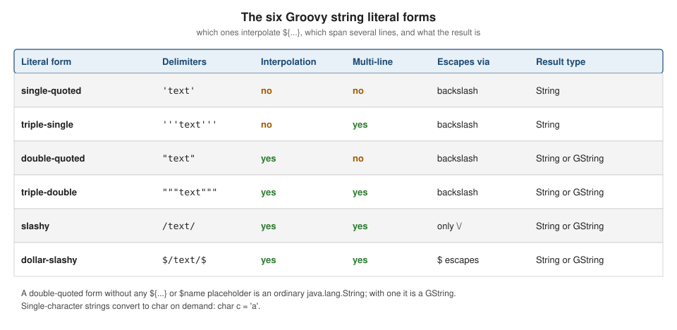

Strings & GStrings
|
This content was generated with the assistance of AI and should be verified against the official documentation before being relied on in production. |
This page is written against Apache Groovy 6.0 (6.0.0, 2026-09-22) and every example was run with Groovy 6.0.0 on JDK 26
(checked on 2026-10-14). Groovy has no string type of its own: a Groovy string is a java.lang.String, so everything on
Java Strings & Text (immutability, the string pool, StringBuilder)
still applies. What Groovy adds is six literal forms, interpolation through groovy.lang.GString, and a large set of GDK
methods on String and CharSequence. The GString is the one place where "it is just a String" stops being true, and most
of this page explains where that matters.
The six literal forms
Groovy distinguishes strings by their delimiters. Three properties tell them apart: whether ${...} placeholders are
interpolated, whether the literal can span several lines, and which escapes it supports.

| Form | Delimiters | Interpolates | Multi-line | Notes |
|---|---|---|---|---|
Single-quoted |
|
no |
no |
Plain |
Triple-single-quoted |
|
no |
yes |
Plain |
Double-quoted |
|
yes |
no |
|
Triple-double-quoted |
|
yes |
yes |
Same typing rule as double-quoted; quotes need no escaping |
Slashy |
|
yes |
yes |
Backslash is literal (handy for regexes); only |
Dollar-slashy |
|
yes |
yes |
|
def zone = 'north'
def single = 'It\'s a "greenhouse" in $zone' // no interpolation
def tripleS = '''first line
second line''' // multi-line, no interpolation
def dq = "Zone: ${zone}" // interpolation
def tripleD = """Zone ${zone}
has "quotes" freely""" // multi-line, interpolation
def slashy = /C:\greenhouse\${zone}\d+/ // interpolation, backslash is literal
def dollarSl = $/Cost: $$5 and a slash // and \d in ${zone}/$
[single, tripleS, dq, tripleD, slashy, dollarSl].each { println it }
println '---'
println([single, tripleS, dq, tripleD, slashy, dollarSl]*.class*.simpleName)It's a "greenhouse" in $zone
first line
second line
Zone: north
Zone north
has "quotes" freely
C:\greenhouse\north\d+
Cost: $5 and a slash // and \d in north
---
[String, String, GStringImpl, GStringImpl, GStringImpl, GStringImpl]Some practical consequences:
-
The single-quoted form is the only one where
$is never special, so it is the safe choice for text that merely contains dollar signs. -
A slashy string may not be empty (
//starts a comment). At the start of a statement,println /text/is parsed as a division and fails to compile, so wrap the literal in parentheses:println(/text/). -
Slashy and dollar-slashy strings exist mostly for regular expressions and file paths, because nothing needs doubling (compare
'\\d+'with/\d+/). See Regular Expressions. -
Only a literal with at least one placeholder becomes a GString; the type is decided at compile time, not by the delimiter alone.
Escapes
The usual Java escapes work in every form except slashy and dollar-slashy: \t, \b, \n, \r, \f, \\, \' and
\", plus Unicode escapes \u00e9 and octal escapes such as \101. A backslash at the very end of a line inside a
triple-quoted string removes the line break, so a long literal can be written on several source lines.
println 'tab:\tX'
println 'unicode: \u00e9 \u20AC'
println 'backslash: \\ quote: \' dq: \"'
println "dollar: \$5"
println 'octal: \101'
def joined = 'one line, \
written on two'
println joined
println(/slash: \/ and backslash-d: \d/)
println($/dollar: $$ slash: $/ literal: \d/$)tab: X
unicode: é €
backslash: \ quote: ' dq: "
dollar: $5
octal: A
one line, written on two
slash: / and backslash-d: \d
dollar: $ slash: / literal: \dIn a double-quoted or slashy string the dollar sign needs escaping (\$), in a dollar-slashy string it is doubled
($$). The line-continuation backslash is also accepted in single and double-quoted strings, as the example shows.
Characters
Groovy has no character literal. A one-character string becomes a char through an assignment to a char variable, a cast
or as char. Indexing a string, by contrast, yields a one-character String.
char c1 = 'a' // a single-character string converted to char
def c2 = 'b' as char
def c3 = (char) 'c'
def s = 'd' // still a String
println([c1, c2, c3, s]*.class*.simpleName)
println((c1 as int)) // 97
println((char) 100) // d
println 'abc'[1] // indexing returns a String, not a char
println 'abc'.charAt(1).class.simpleName[Character, Character, Character, String]
97
d
b
Characterdef c = 'a' therefore holds a String, which is the usual reason a Java switch or a char comparison ported to
Groovy behaves differently; see Differences with Java.
GString interpolation
A placeholder is either $name with an optional dotted path ($plant.zone.id) or ${expression} with any Groovy
expression. The short form handles only property access: $name.length means the property length of name, not a
method call, and fails for a String. Use braces for calls and arithmetic. Interpolated values go through toString(),
null renders as the text null, and a lone $ followed by a space is a compile error (Illegal string body character
after dollar sign) unless it is escaped.
def name = 'tomato'
def plant = [name: 'basil', zone: [id: 7]]
println "Plain: $name"
println "Expression: ${name.size() * 2}"
println "Dotted: $plant.name in zone $plant.zone.id"
println "Method call needs braces: ${name.toUpperCase()}"
try {
println "Not a method call: $name.length"
} catch (MissingPropertyException e) {
println e.message
}
println "Null renders as text: ${null}"
println "Collections: ${[1, 2]} and ${[a: 1]}"
println "A dollar sign: \$5, and a quote: $name's"
println "Nested: ${"inner ${name}"}"Plain: tomato
Expression: 12
Dotted: basil in zone 7
Method call needs braces: TOMATO
No such property: length for class: java.lang.String
Null renders as text: null
Collections: [1, 2] and [a:1]
A dollar sign: $5, and a quote: tomato's
Nested: inner tomatoLazy evaluation
A GString is an object with two arrays: the literal fragments (getStrings()) and the values captured at creation time
(getValues()). The text is only assembled when toString() or writeTo() runs. The captured values are evaluated
eagerly, so later changes to the variable are not seen. To defer evaluation, use a closure placeholder ${-> expr}: the
closure is called on every conversion. A closure with one parameter receives a Writer and writes straight into the
output.
def temp = 20
def eager = "Temperature: ${temp}" // value captured when the GString is created
def lazy = "Temperature: ${-> temp}" // closure evaluated on every toString()
def stream = "Temperature: ${ out -> out << temp }" // one-parameter closure gets a Writer
temp = 31
println eager
println lazy
println stream
def gs = "Temperature: ${temp}"
println gs.strings.toList() // literal parts
println gs.values.toList() // captured values
println gs.valueCountTemperature: 20
Temperature: 31
Temperature: 31
[Temperature: , ]
[31]
1The same mechanism is what makes template-style code and DSLs cheap: a GString passed to a logger or to
java.sql-style APIs can be evaluated only if it is used. See
Template Engines for full templating.
GString is not String
GString does not extend String (which is final); it implements CharSequence, Comparable and Writable. Groovy
converts it to a String automatically wherever a String is required: when passed to a String parameter, assigned to
a String variable, returned from a method declared to return String, or used with ==. The conversion does not happen
in places the compiler cannot see, which is where surprises come from.
def n = 5
def gs = "n=${n}"
assert gs == 'n=5' // == compares text
assert 'n=5' == gs
assert !gs.equals('n=5') // equals() does not: a GString is not a String
assert !'n=5'.equals(gs)
assert gs.toString().equals('n=5')
assert gs.hashCode() != 'n=5'.hashCode() // hashCodes differ
assert gs.class.name == 'org.codehaus.groovy.runtime.GStringImpl'
def lookup = ['n=5'] as Set
assert !lookup.contains(gs) // hash-based lookups miss
assert lookup.contains(gs.toString())
def key = 'zone'
def m = [zone: 1]
println m.get("${key}") // null: a plain Map lookup with a GString misses
println m["${key}"] // 1: the subscript operator converts to String
println m."$key" // 1: dynamic property name
def m2 = [("${key}"): 2] // the key is stored as a GString
println m2.keySet()*.class*.simpleName
println m2['zone'] // null: the stored key is a GStringnull
1
1
[GStringImpl]
nullThe rules of thumb that follow from this run:
-
Compare with
==, never withequals(), when one side may be a GString. -
Call
toString()(oras String) before using a GString as a key in aHashMap, as an element of aHashSet, or in any other hash-based structure. A map literal stores a(gs)key unchanged, so convert it yourself. -
A method declared with a
Stringparameter receives a realString, because Groovy converts the argument at the call; anObjector generic parameter receives theGStringitself. -
switchon a GString does matchStringcases (switch ("n=${n}") { case 'n=5': ... }takes the branch), becausecaseis not based onequals().
The hashCode difference follows from the design: the text of a GString can change between calls when it holds closures,
so it cannot share the hash of an equal-looking String.
Concatenation
+ builds a new string, with the usual Java conversions: the right operand is converted with toString(). GString + String
yields a GString (as the example below shows). The GDK also gives strings * (repeat), - (remove the first
occurrence), and << (append). On a StringBuilder, << appends in place; on a String it creates a StringBuffer.
def a = 'x'
def b = 3
println a + b // String plus Integer
println a + " ${b}" // String plus GString
println(("${a}" + 'y').class.simpleName) // GString plus String is a GString
println 'ab' * 3 // repeat
println 'hello' - 'l' // removes the first occurrence
def sb = new StringBuilder('s')
sb << 'tr' << 1 // << appends to a StringBuilder
println sb
println('a' << 'b' << 'c') // on a String it builds a StringBuffer
void takes(String s) { println "received ${s.class.simpleName}" }
takes("v=${b}") // the GString is converted at the call
takes('v')x3
x 3
GStringImpl
ababab
helo
str1
abc
received String
received StringFor building large strings in a loop, use a StringBuilder (or join, collect) exactly as in Java: + allocates a
fresh object each time.
Source: Groovy GDK: java.lang.String
Multi-line strings
A triple-quoted string keeps its line breaks and the indentation of its continuation lines, which makes indented source awkward. A backslash straight after the opening delimiter drops the first newline, and two GDK methods remove the margin.
-
stripIndent()removes the leading whitespace shared by all lines. The least-indented line sets the amount, andstripIndent(n)removes exactlyncharacters. The closing delimiter counts: if the text ends with a newline, the empty last line has zero indentation and nothing is removed. -
stripMargin()removes everything up to and including the first|on each line;stripMargin('#')uses another character. -
readLines()andlines()split on\n,\r\nand\r.
def report = '''\
Zone A
tomato 12
Zone B'''
println report.stripIndent() // removes the common leading indentation
println '--'
def withTrailingNewline = '''\
Zone A
tomato 12
'''
print withTrailingNewline.stripIndent() // the empty last line counts: nothing is removed
println '--'
println '''\
|Zone A
| basil 4
|Zone B'''.stripMargin() // removes everything up to and including '|'
println '--'
println '''\
#Zone A
# mint 2'''.stripMargin('#') // custom margin character
println '--'
println 'a\nb\r\nc'.readLines()
println '''first
second'''.lines().toList()
println 'continued \
line'Zone A
tomato 12
Zone B
--
Zone A
tomato 12
--
Zone A
basil 4
Zone B
--
Zone A
mint 2
--
[a, b, c]
[first, second]
continued lineThe same two methods apply to the GString forms, since they are defined on CharSequence.
GDK methods for strings
The GDK adds well over a hundred methods to String and CharSequence; the full list is in the GDK API page cited below.
Many are covered elsewhere (=~,
the collection-style collect, each and findAll in Working with Collections).
The ones below are the day-to-day set.
def csv = 'tomato, basil;mint chive'
println csv.tokenize(', ;') // splits on any of the characters
println csv.split(/[,; ]+/).toList() // splits on a regex, like Java
println 'a,b,,'.split(',').toList() // Java drops trailing empties
println 'a,b,,'.split(',', -1).toList() // ... unless the limit is negative
println 'a,b,,'.tokenize(',')
println 'abc'.padLeft(6, '*') + '|' + 'abc'.padRight(6) + '|' + 'abc'.center(7, '-')
println 'hello'.tr('el', 'ip')
println 'hello world'.capitalize() + ' ' + 'Hello'.uncapitalize()
println '42'.toInteger() + 1
println '3.5'.toBigDecimal()
println(['42'.isNumber(), 'x42'.isNumber(), '42'.isInteger(), '4.2'.isDouble()])
'one\ntwo'.eachLine { line, n -> println "${n}: ${line}" }
println 'abcdef'.takeWhile { it != 'd' }
println 'abcdef'.dropWhile { it != 'd' }
println 'abcdef'.take(2) + '|' + 'abcdef'.drop(4) + '|' + 'abcdef'.takeRight(2) + '|' + 'abcdef'.dropRight(2)
println 'abcdef'[1..3] + ' ' + 'abcdef'[-2..-1] + ' ' + 'abcdef'[3..0] + ' ' + 'abcdef'[2..<4]
println 'hello'.reverse() + ' ' + 'hello'.count('l') + ' ' + 'hello world'.find(/w\w+/)
println 'a1b22'.findAll(/\d+/)
println 'snake_case_name'.split('_').collect { it.capitalize() }.join()
println 'abc'.next() + ' ' + 'abc'.previous()
println 'a b c'.collect { it.toUpperCase() }
println '%d items'.formatted(3) + ' ' + String.format('%05.1f', 3.14159)
println 'camelCaseName'.split(/(?=[A-Z])/).toList()
println(['x'.isEmpty(), ''.isEmpty(), ' '.isBlank(), ' pad '.trim()])
println(['abc'.compareTo('abd'), 'abc' <=> 'abd', 'abc' < 'abd'])[tomato, basil, mint, chive]
[tomato, basil, mint, chive]
[a, b]
[a, b, , ]
[a, b]
***abc|abc |--abc--
hippo
Hello world hello
43
3.5
[true, false, true, true]
0: one
1: two
abc
def
ab|ef|ef|abcd
bcd ef dcba cd
olleh 2 world
[1, 22]
SnakeCaseName
abd abb
[A, , B, , C]
3 items 003,1
[camel, Case, Name]
[false, true, true, pad]
[-1, -1, true]Points worth remembering from this output:
-
tokenizereturns aList, treats its argument as a set of delimiter characters and never yields empty tokens;splitreturns an array, takes a regular expression and keeps interior empties. -
trmaps characters one for one (hereetoi,ltop); it is not a regex replacement. -
isNumber(),isInteger()and friends test a string beforetoInteger()andtoBigDecimal()convert it; the converters throwNumberFormatExceptionon bad input. -
A string is a sequence of characters: a range subscript (
'abcdef'[1..3], a reversed range reverses) slices it, andcollect,each,findandanyiterate over its characters as one-character strings. See Ranges. -
eachLinenumbers lines from 0 in Groovy 6.0. -
next()andprevious()change the last character, which is what makes string ranges like'a'..'e'work. -
The number formatting in
String.formatis locale-sensitive; the example output above was produced with a locale using a comma as the decimal separator, so'%05.1f'printed003,1. Pass aLocaleexplicitly when output must be stable.
Source: Groovy GDK: java.lang.String
Where the book is outdated
The Manning book Groovy in Action (publisher page in the references) explains the same six literal forms and the GString mechanics, and that explanation still holds. What to check against the current documentation instead of the book:
-
Features added to the GDK after the book was written, such as
takeWhile,dropWhile,takeRightanddropRight, and recent JDK methods that Groovy code can now call directly (formatted(),lines(),isBlank()on JDK 11 and 15 or later). -
The default imports, the Groovy version in the examples and the Java baseline (JDK 17 or later for Groovy 6.0).
-
Anything described as a limitation of GStrings in old text: see What’s New & Migrating from Older Versions.
For the broader language context see Lexical Structure, Comments, Keywords & Identifiers
and Numbers & Numeric Literals. Other languages in this site handle
the same problem differently: Kotlin Strings & Text uses template
strings that are always plain String, so Kotlin has no GString-like type to trip over.